控件清单
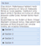
 
 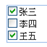
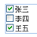
 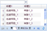
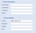
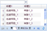
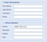

一点是把可以把普通的form转成支持AJAX提交。本组件监听表单的submit事件，
覆盖传统的submit事件监听器，而使用ajax方式来处理submit事件。在表单提交之前，本组件会收集
所有的表单字段，并将之序列化后附加在ajax请求的数据域(data)中。支持所有标准的html可提交的
表单元素。
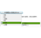


 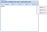
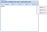
支持各个页签以ajax方式加载内容；支持懒加载；支持页签滚动。

 
工具栏组件，一般作为菜单、按钮、LabelField等组件的容器，只能位于Panel或者FormPanel等容器内组件中。
 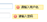
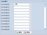
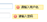
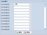
FAccordion
可折叠组件，也可被叫做手风琴组件或者抽屉组件，一次只能打开一个抽屉,通常用于主框架页面中的菜单展示。FAjax
异步交互，提供简化的与后台交互的方法。并为其它组件提供远程交互能力。FButton
按钮组件，代替原始html中的button，提供了图标的功能并扩展了常用的api，通常用于事件和动作触发。FButtonGroup
按钮组， 管理多个Button组件，管理button的排布位置等FCalendar
日历组件，供用户选择日期和时间的输入以及格式化。FCheckboxGroup
复选框组容器，管理多个CheckBox组件，批量赋值和状态管理等功能。FCombo
选择下拉菜单组件，代替HTML中的select标签，并能够加载远程数据内容，支持下拉框内容复选和输入检索过滤等功能。FComboGrid
选择下拉表格，当展现大量数据时，如果使用传统的FCombo组件，则在低端配置的机器或ie6浏览器下会遇到性能问题。使用FComboGrid组件，可以将数据分页展现，解决展现一次性展现大量数据的性能问题。FFieldset
字段集容器，和HTML的<fieldset>标签的功能类似；在一个form中，对组件进行分组和管理，浏览器会以特殊方式来显示它们，它们可能有特殊的边界，或者甚至可创建一个子表单来处理这些元素；可以折叠和展开。FForm
表单，业务数据表单输入时，作为容器，为其中的表单控件提供统一的数据提交、绑定、验证等操作。更重要的一点是把可以把普通的form转成支持AJAX提交。本组件监听表单的submit事件，
覆盖传统的submit事件监听器，而使用ajax方式来处理submit事件。在表单提交之前，本组件会收集
所有的表单字段，并将之序列化后附加在ajax请求的数据域(data)中。支持所有标准的html可提交的
表单元素。
FGrid
数据表格，以表格的形式统一展现后台数据，支持单选、复选、分页、自定义列渲染和行样式设置。FMenu
菜单，适用于菜单方式链接导航或右键菜单。FMessage
消息提示，用于提供提示信息的弹出窗口，类似于JavaScript中使用alert()、confirm()、prompt()函数时出现的那种提示信息的弹出窗口。FNumberField
数字输入框，用户需要一个只能输入数字（允许有小数点）的输入框组件。该组件禁止输入字符，且可以设置小数点的精度。FPanel
面板容器，是一种面向用户界面构建应用程序最佳的单元块，一种特定功能和结构化组件。 面板包含有底部和顶部的工具条，连同单独的头部、底部和body部分。它提供内建都得可展开和可闭合的行为， 连同多个内建的可制定的行为的工具按钮。面板可简易地置入任意的容器或布局。FTabs
选项卡，导航式容器，以切换的方式在多个页面间切换浏览。通过简单的配置展示多页签信息，同时组件提供丰富的事件支持，比如选中页签，关闭页签，添加页签等等。支持各个页签以ajax方式加载内容；支持懒加载；支持页签滚动。
FTargetSelect
回填输入框，不含有隐藏域的输入框，在默认情况下是只读的。此组件在FTextField组件的基础上绑定了按钮图标的点击事件。一般应用于点击按钮弹出一个FWin， 然后将在FWin上操作的结果回填到输入框中。FTextField
文本输入框，输入文字，与html原始的input[type=text]一致。FToolbar
小工具布局容器工具栏组件，一般作为菜单、按钮、LabelField等组件的容器，只能位于Panel或者FormPanel等容器内组件中。